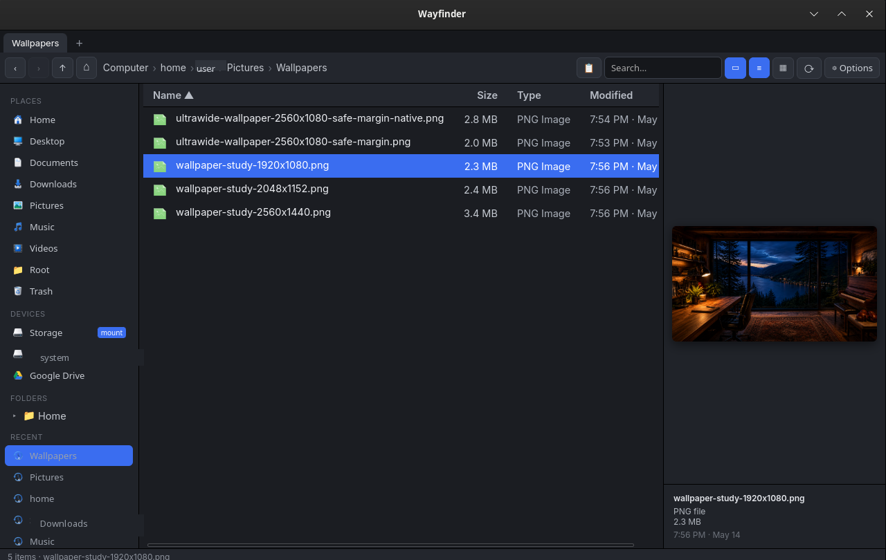

Wayfinder
Desktop utilityFile navigation and workflow experiments for moving around a local machine faster.
What it is
Wayfinder is a lightweight utility focused on local navigation and workflow speed. It belongs in the desktop programs section, not the web app section.
Status
- Native Linux target
- Desktop helper concept
Screenshots
